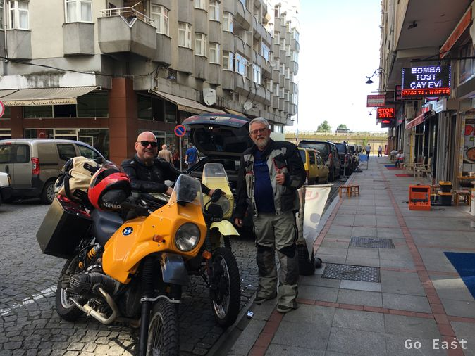
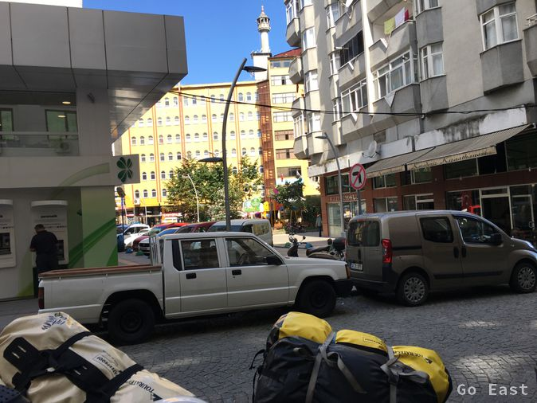
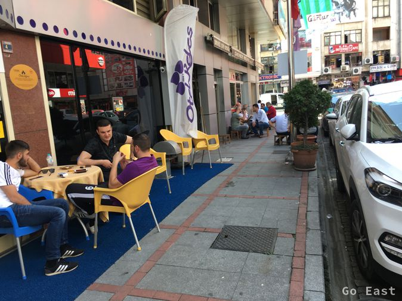
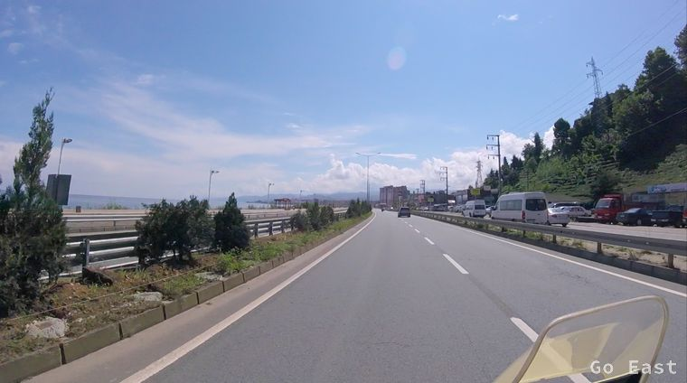
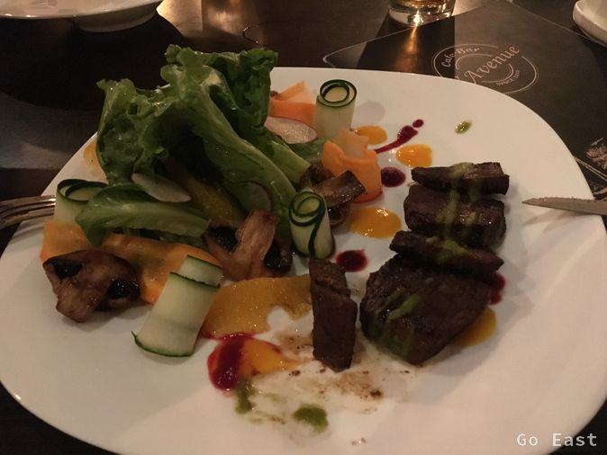

Gori
The central location of the hotel means we wake up at 4:00 am from the muezzin calling for prayer. Since the hotel is located between 2 mosques, we get it in stereo.

Rize

Rize

Rize

Rize

Rize
We also activate the Open Street Map (OSM) maps on the Garmin Navis, as the maps included do not contain any other Eastern countries. It works well with small restrictions. Better so, as no Navi.

Black Sea Coast

Black Sea Coast

Black Sea Coast

Black Sea Coast

Black Sea Coast
We drive a short time along the Black Sea coast and reach the border to Georgia. The departure is fast and upon entry into Georgia, we push ourselves a little further, because we are sure again to have 30+ degrees celsius (86+ F) and we pass in our gear.
Arriving in Georgia we also crossed another time zone and now have 2 hours difference to Germany.

Border Georgia

Border Georgia
Batumi, which we reach after a few kilometers, seems to be the Las Vegas of Georgia. Advertising for casinos everywhere. One enters with Georgia another world, compared with that of Turkey.
No more red flags with crescent moon and star, no more pictures of the president, no more minarets but a lot of junkyards, broken streets and rundown houses.
Here the modern influence and relics from the Soviet era seem to meet. New luxury cars here and old military vehicles and old Russian cars there.
In Batumi it is noticeable that some sections of the road consist of large slabs, which seem to consist of bituminous concrete slabs with monorail iron. The dangerous thing, is that these plates are partially broken or broken and you drive through holes in which the iron rods stuck out. Fortunately, it's dry and we do not have to drive over it in the wet weather. On the way to Poti, there are gas pipes along the street in the cities, which are mounted at a height of about 3 meters, thus ensuring the supply of gas to households. I had never seen a gas pipe as an overhead line before!
We turn off in front of Poti in the east and drive on good roads via Kutaissi, Sestaponi in the mountains direction Chaschuri. The road is very winding, nicely developed and we drive along wooded mountains. After a straight stretch of highway we reach Gori, the destination for today.
Finding a place to stay is difficult, as Booking.com does not have anything ready for it here, and also Google and TripAdvisor report a false report. Through questioning passers-byes, we manage to reach a hotel. We are evidently the only guests in the hotel. In the nearby restaurant we still get food and taste the local beer and the local wine.

dinner in Gori